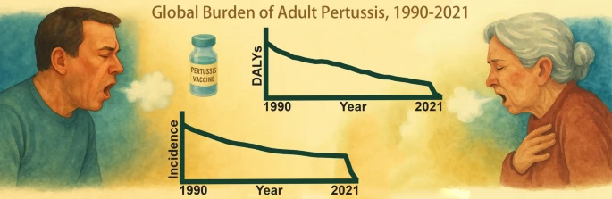
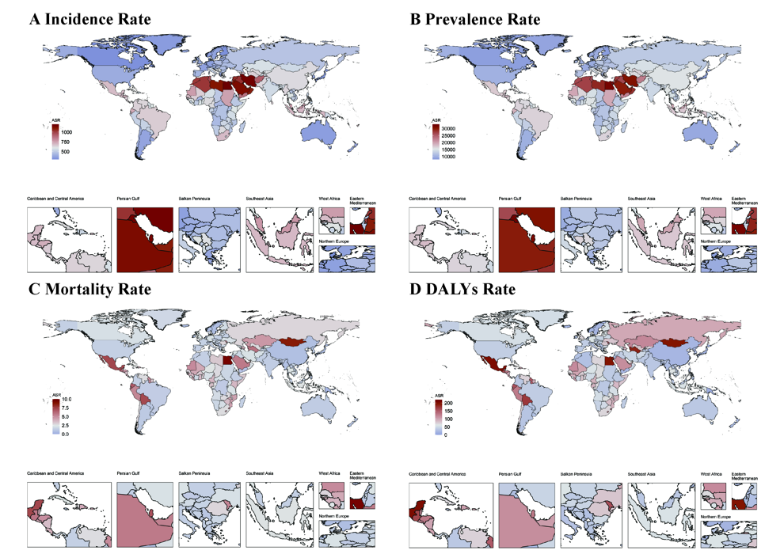
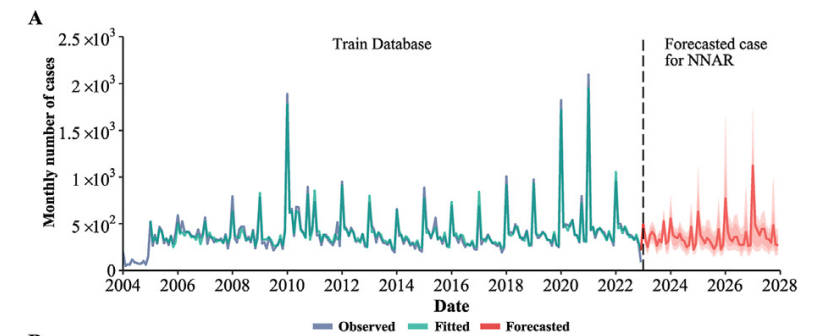
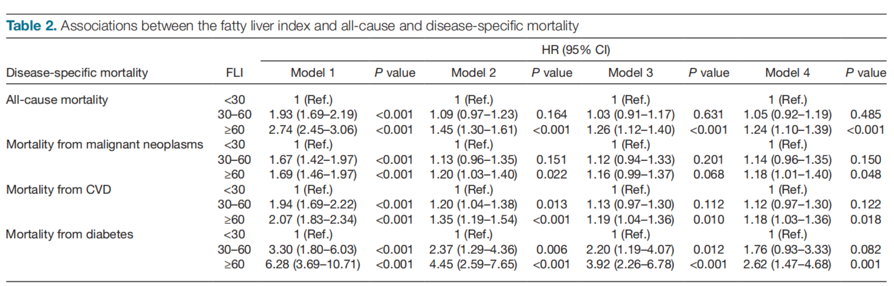
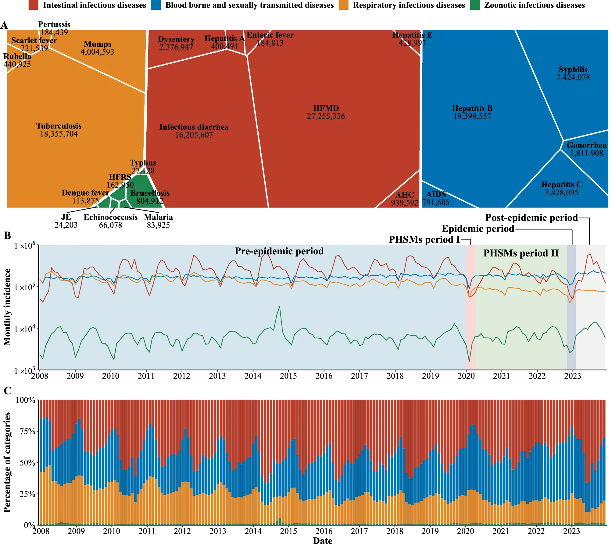
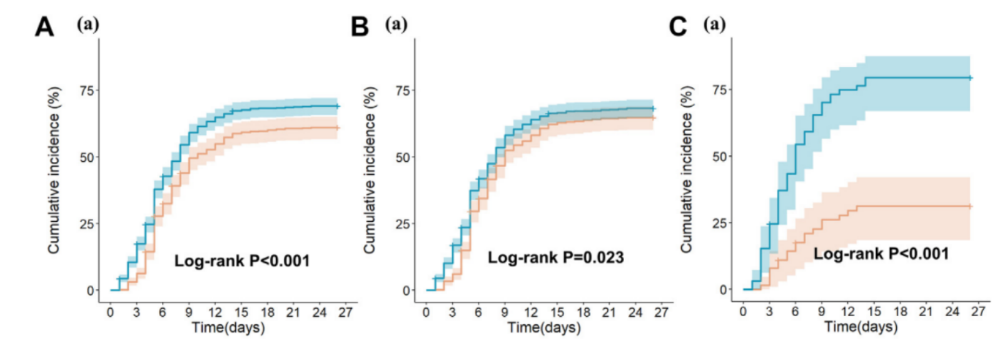

Global, regional, and national burdens of pertussis among adults: a systematic analysis of age-specific trends using Global Burden of Diseases 2021 data
Kangguo Li, Jiadong Wu, Ruixin Zhang, et al.

Licensed Public Health Physician, Department of Hospital Infection Control
Sichuan Public Health General Clinical Center, Jincheng Hospital of West China Hospital, Sichuan University, Chengdu, China
Profile
With a Master's background in Public Health, research experience in infectious disease epidemiology and machine learning-based clinical prediction, and current work experience at one of China's leading hospitals, I am working on data-driven biomedical research at the intersection of epidemiology, artificial intelligence, and clinical health data.
Scholarship
Kangguo Li, Jiadong Wu, Ruixin Zhang, et al.

Zhuang Lin, Ruixin Zhang, et al.

Ruixin Zhang, et al.

Ruixin Zhang, et al.

Kangguo Li, Jia Rui, Wentao Song, Li Luo, Yunkang Zhao, Huimin Qu, Hong Liu, Hongjie Wei, Ruixin Zhang, et al.

Hongfei Mi, Qi Chen, Hongyan Lin, Tingjuan He, Ruixin Zhang, et al.

Training
2022-2025
Master of Public Health, Xiamen, China
2023-2024
Exchange Student in Public Health and Visiting Researcher in the Health Economics Unit, Malmo, Sweden
2018-2022
Bachelor of Management in Health Service and Management, Chengdu, China
Recognition